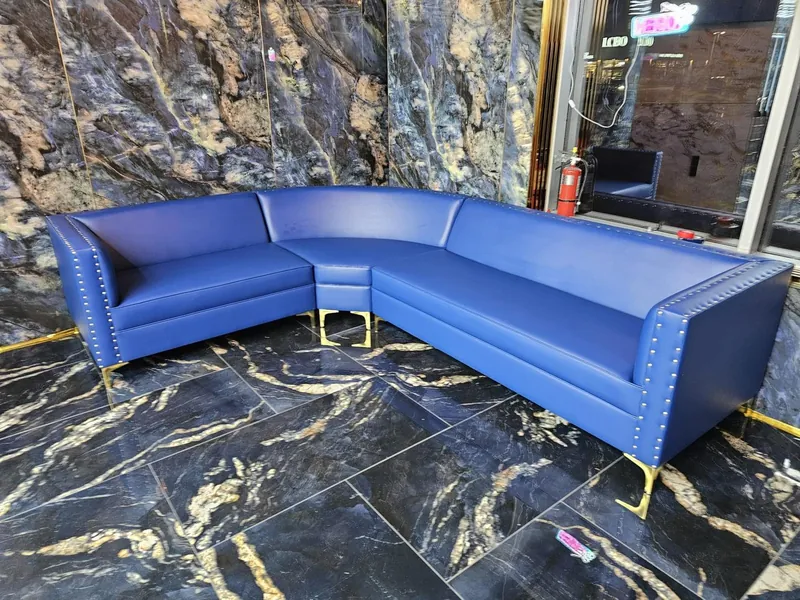

Home / Restaurant Booths
Custom Restaurant Booths, Made in Canada
Our booths are found in businesses all across the GTA — restaurants, bars, cafés, and lounges you may have already visited. Every booth is custom-built to order right here in Mississauga, Canada, at wholesaler pricing with a fast turnaround for your business.
Trusted by restaurants & chains across the GTA
Many popular restaurants and restaurant chains across the GTA use booths we built. Whether you are opening one location or outfitting several, we manufacture custom restaurant booths, banquette seating, wall benches and commercial seating, and deliver across Toronto, the GTA and Ontario.
Planning a new dining room? Our restaurant furniture guide covers booth sizes, materials and everything else we build for restaurants, bars and lounges.
Featured in restaurants across the GTA
Our restaurant booths and commercial furniture are featured in restaurants, restaurant chains, cafés, bars, lounges, banquet halls and entertainment venues across the Greater Toronto Area. Chances are you've already sat in one of our booths without knowing it.
Every installation is custom-built in our Mississauga facility to the venue's floor plan, brand colours and seating count, then delivered and ready for service, from a single booth for a neighbourhood café to full dining rooms for multi-location restaurant groups.
- Restaurants & restaurant chains
- Cafés & bakeries
- Bars, pubs & lounges
- Banquet halls & event spaces
- Entertainment venues
- Hotels & hospitality
Serving restaurants in Mississauga, Toronto, Brampton, Vaughan, Oakville, Etobicoke, North York, Scarborough, Markham, Richmond Hill, Milton, Burlington, Hamilton and across Ontario.
Recent projects
Restaurant, commercial and club booths we built and installed across the GTA, for clients including Crab Boil, Habibz Corner and Nikon.
Booths we build
Every booth is built to your floor plan, in commercial-grade materials.
- Single & double booths
- Straight runs & wall benches
- L-shaped & corner booths
- U-shaped booths
- Curved banquettes
- Round centre island booths
- Tufted & channel-stitch designs
- Two-tone & retro diner booths
- Matching benches & ottomans
Specializing in Restaurant Booths
We specialize in custom restaurant booths used by businesses across the GTA — from small cafés to large bars and dining rooms. Our booths are built tough for high-traffic commercial environments and designed to elevate any space. Chances are you've sat in one of our pieces without even knowing it.
Any Size, Colour & Material
Every booth and commercial piece is fully custom. Choose your exact dimensions, configuration, fabric, vinyl, or leather — in any colour to match your brand. We accommodate straight runs, L-shapes, U-shapes, curved banquettes, and more. Easy-clean commercial-grade materials available.
Wholesaler Pricing
We sell factory-direct with no retail markup, giving restaurants and businesses the best possible price on premium Canadian-made commercial furniture. Fast turnaround so your business isn't kept waiting — manufactured right here in Mississauga and delivered anywhere in Ontario.
Reupholstery for Existing Commercial Furniture
Already have commercial booths, banquettes, or chairs that are worn, torn, or just need a fresh look? We offer full reupholstery services for existing commercial furniture. Instead of replacing everything, we restore your current pieces using commercial-grade, easy-clean materials — saving you money while keeping your space looking sharp. Ideal for restaurants looking to refresh their interior without a full renovation.
From floor plan to dining room
A simple process for restaurant owners and designers.
Share your space
Send your floor plan or measurements, or have us visit to discuss your layout.
Pick materials & colours
Choose shapes, stitching and commercial-grade vinyl, leather or fabric to match your brand.
Built in Mississauga
Your booths are manufactured in our Mississauga facility with a fast turnaround.
Delivered across Ontario
We deliver to your restaurant anywhere in Toronto, the GTA and Ontario.
Restaurant booth questions
Are your restaurant booths made in Canada?
Yes. Every restaurant booth, banquette and commercial seat is custom made to order in our workshop in Mississauga, Ontario, and delivered to restaurants across the GTA and Ontario.
Do you make custom booths for bars, lounges and offices?
Yes. Besides restaurant booths we build custom booths for bars, lounges, cafés, banquet halls, offices and VIP areas, in any shape, size and colour.
Do you build booths for restaurant chains?
Yes. Many popular restaurants and restaurant chains across the GTA use booths we built. We can build for a single location or outfit several.
Where are your restaurant booths installed?
Our booths and commercial seating are featured in restaurants, cafés, bars, lounges, banquet halls and entertainment venues across the GTA, including Mississauga, Toronto, Brampton, Vaughan and Oakville, and we deliver anywhere in Ontario.
Can you match our brand colours?
Yes. Every booth is fully custom in any fabric, vinyl or leather, in any colour to match your brand.
Can you reupholster our existing booths?
Yes. We restore existing booths, banquettes and chairs with commercial-grade, easy-clean materials, often without closing for a full renovation. See our reupholstery services.
Do you deliver outside the GTA?
Yes. Booths are manufactured in Mississauga and delivered anywhere in Ontario.
Visit our Mississauga showroom
See the fabrics, leathers and finishes in person, sit on our pieces, and get a quote for your custom sofa, sectional, bed or restaurant booths.
7025 Tomken Rd #19
Mississauga, ON L5S 1R6
| Monday | 10 a.m. – 8 p.m. |
| Tuesday | 10 a.m. – 8 p.m. |
| Wednesday | 10 a.m. – 8 p.m. |
| Thursday | 10 a.m. – 8 p.m. |
| Friday | 10 a.m. – 8 p.m. |
| Saturday | 11 a.m. – 8 p.m. |
| Sunday | 12 p.m. – 6 p.m. |